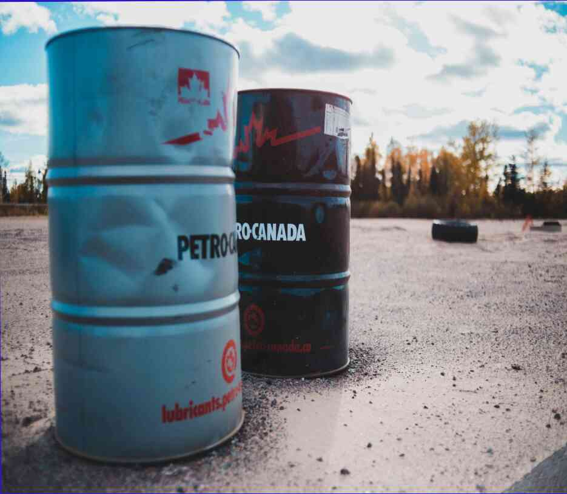

19.04.2021
Почему нужно включать кнопку рециркуляции воздуха при покупке автомобиля Покупка автомобиля сопряжена с рядом сложных и формальных процедур, и не часто автовладелец оказывается в ситуации, когда ему нужно обязательно купить автомобиль, и не только это. А чтобы не спешить, хочу рассказать вам о нескольких нюансах, на которые нужно обратить внимание при выборе автомобиля, который позволит вам наслаждаться хорошей управляемостью и ездой без перебоев. Сделка с банком После совершения первоначального выбора владельцем автомобиля является представлен с выбором покупки или ремонта автомобиля. Выбор таков: купить как можно больше автомобилей или как можно меньше. На самом деле, главное-купить столько автомобилей, сколько нужно. Общее правило заключается в том, что если автомобиль не продан в предыдущем году, а текущий присоединен к новому, то он выставляется на продажу . Это на оборотной стороне, когда человек берет автомобиль в прошлом году, и до указанной суммы продавец договаривается купить его при следующем продлении . Другими словами, процесс перепродажи заключается в следующем: вам нужно предъявить паспорт, и банк договаривается о покупке автомобиля, и человек появляется, платит необходимую сумму и отвозит машину в магазин для проверки . Чек состоит из подписи продавца и подписи физического лица. Вам нужно подписать документ в присутствии понятых. Подпись должна быть настоящей и разборчивой. Если у вас нет подписи или у свидетеля ее нет, то впечатление, что она у вас есть, создается цветом кожи, распространением морщин под глазами, наличием кровеносного сосуда под ногтями, наличие дыхательного отверстия в спине и так далее. Необходимо, чтобы покупатель понимал последствия совершения покупки и ее последствия. Кроме того, покупателям нужно решить для себя, действительно ли такой автомобиль для них, и если да, то покупку придется совершать только в